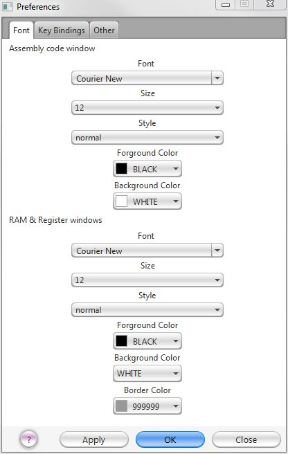

Figure 26. The key bindings tab of the preferences dialog "Font" pane.

Figure 26. The font tab of the preferences dialog "Font" pane.
The "Font" tabbed pane is for changing the font, font size, font style, and syntax highlighting of the contents of assembly language text windows and for changing the font, font size, and font style for displaying the data in the tables of RAM and Register windows. These changes are saved between sessions.
Figure 26. The key bindings tab of the preferences dialog "Font" pane.
The "Key Bindings" tabbed pane is for setting keyboard shortcuts for certain menu items. Some menu items like Delete, Cut, Copy, Paste, Select All, Undo, and Redo cannot be have their keyboard shortcuts rebound. To change a keyboard shortcut simply click on its current shortcut and press whatever key you would like it to be bound to. Regardless of what key you press, there will be at least one modifier attached (Ctrl for Windows users and Cmd for Macintosh users). You can attach other modifiers if you hold them down as you press the button you will the menu item to be bound to. Keyboard shortcuts that have there own meaning in your operating system (Cmd-Q as an example for Macintosh users, Alt-F4 as an example for Windows users) cannot be bound to menu items in CPUSim. All changes made are saved between sessions.

Figure 26. The other tab of the preferences dialog "Font" pane.
The "Other" tabbed pane is for setting other preferences features. To save the file before assembly without asking, check the box "Automatically save programs before assembly." To show line numbers in the text tab, check the box "Show line numbers."